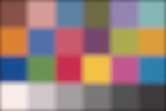
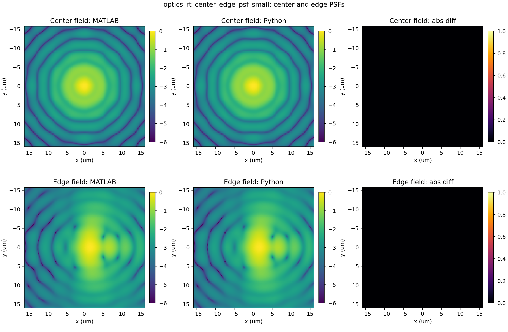
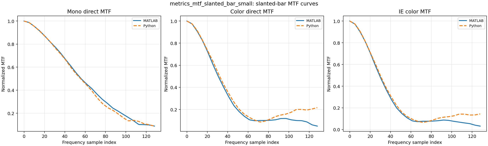
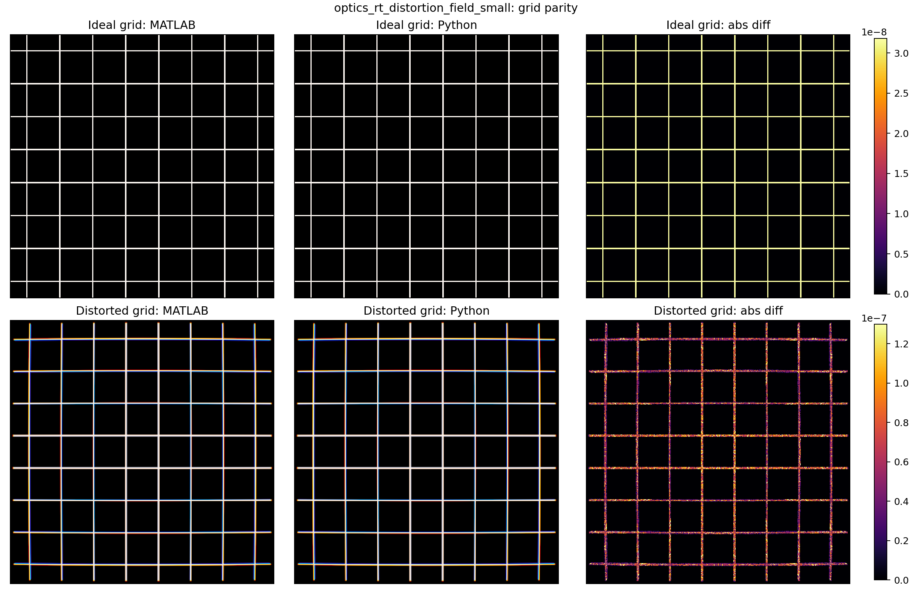
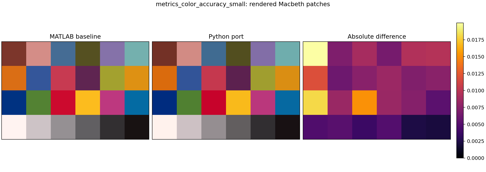
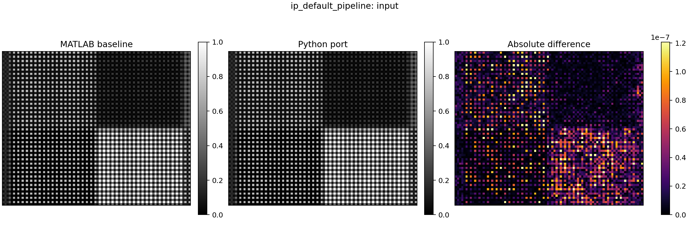
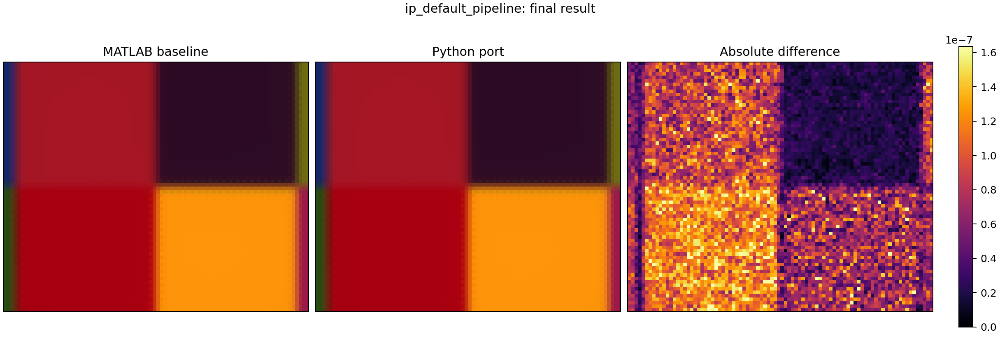
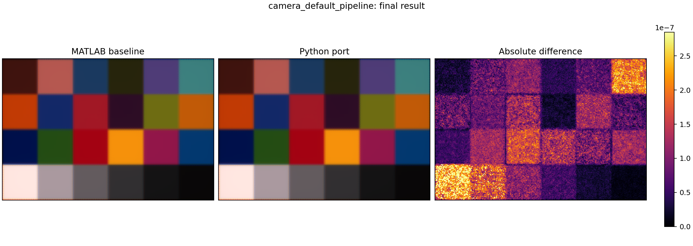
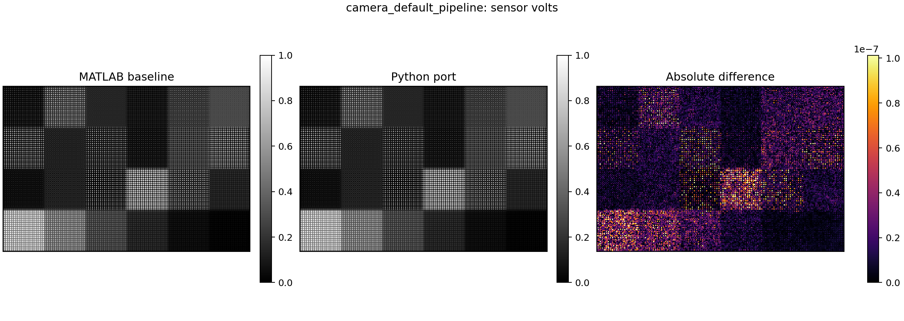
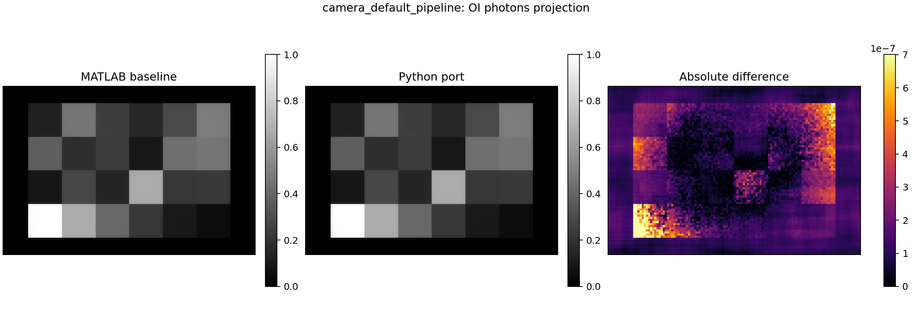

Configuration Resolution
Scene Macbeth 4x6 is rendered through Front Wide 120deg catalog optics, sampled by Bayer RGB 100x150, then processed by Default sRGB. Requested sensor resolution is preserved unless the user explicitly selects Match scene FOV.
| Config Area | Validation Meaning | Badge |
|---|---|---|
| Detector threshold / ISP replay | Existing output can be reprocessed without new optical rendering. | Replayable |
| FOV / lens / PSF mode | Requires optical image recomputation; raytrace grid gives stronger evidence. | Simulatable |
| New lens stack / sensor QE | Simulation narrows candidates; release evidence still needs lab/vehicle capture. | Physical Required |
What This Mock Makes Explicit
The same scene can be reused, but scene FOV, lens FOV, sensor sampling, and ISP processing are separate decisions. If they conflict, the resolution policy decides whether the sensor keeps its requested pixel grid or is resized to match the optical field. The UI should always show that decision before the run result is trusted.
The perception block is a proxy in this mock. A real detector should be connected through the adapter contract, not hidden inside the UI.

Scene Config Semantics
| Scene type | Macbeth 4x6 |
|---|---|
| Scene FOV | Angular content entering the optical model. This is not the same as sensor resolution. |
| Patch size | Used by chart-like scenes; ignored by some texture or analytic targets until adapters support it. |
| Illuminant | D65 baseline with future hooks for night, glare, rain, and HDR stress suites. |
Scene config defines what the camera sees. Lens config defines how that scene is projected and blurred. Sensor config defines how photons become electrical signal. ISP config defines how sensor data becomes display/perception input.


Lens PSF Mode
Selected optics default is used unless a diffraction, gaussian proxy, or raytrace PSF grid mode is selected. Raytrace PSF grid should be treated as the preferred evidence for surface-derived aberration.
Strip Pattern Response

Sensor QE Curve
Illustrative R/G/B QE response. Replace with sensor asset data when available.
Sensor Noise
Read noise, shot noise, and saturation should be visible next to image quality output.




Live Result
In the real workbench, this area should load the generated artifacts from
public/assets/camera-e2e/live-runs and retry image loading until the
runner has finished writing files.


Adapter Contract
| Stage | Input | Output |
|---|---|---|
| Scene adapter | scene type, FOV, illuminant, target params | scene radiance target |
| Lens adapter | lens asset, PSF mode, FOV policy | optical image / OI photons |
| Sensor adapter | sensor asset, QE/noise, resolution policy | sensor volts / raw Bayer |
| ISP adapter | raw/sensor volts, ISP preset | IP sRGB image |
| Perception adapter | IP image plus metadata | detection/fusion-ready objects |
[ready] Sinclair CameraE2E execution mock loaded. [ready] Select scene, lens, sensor, ISP, and lens physics. [note] This HTML file is a UI mock. The React app owns the real Vite endpoint. [note] Real detector is not executed in this mock.
Warnings / Adapter Notes
Lens surface PSF and aberration evidence should come from raytrace optics or PSF grid assets. Catalog lens defaults and gaussian PSF are useful for interaction design, but they must not be presented as final optical evidence. Physical validation is still required before production sign-off.